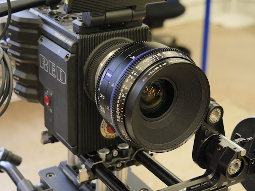
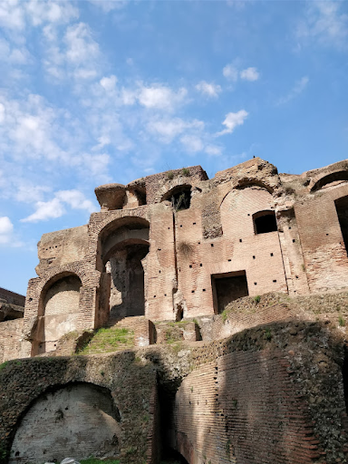
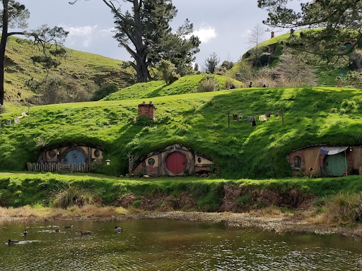
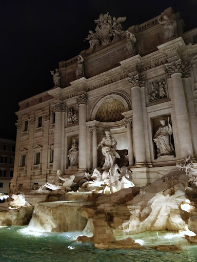
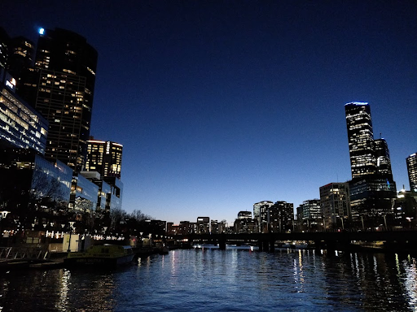

This picture isnt of anything special but its the very first picture I ever took on my first non phone camera. My first camera definitely wasnt not this red camera that is probably worth thousands of dollars but I think I used the functionality I had pretty well here. In particular I like this photo because of the way the focus is set.
Going back to Rome here is a picture of the old city. Now all that is left are bits of buildings like this but you can imagine how magnificent it looked when it was first built. Thats why I like this picture because you dont really know what its a picture of and its left up to the viewer to fill it in how they wish.
This picture was taken in New Zealand at the actual set of the Shire featured in The Hobbit. The set for the Shire in Lord Of The Rings was mostly done in movie sets and the rest was torn down however when they rebuit it for The Hobbit they decided to leave it. Now anyone can come and visit and walk around the actual Shire. You can even get a beer at The Green Dragon!
This is a picture of the Trevi Fountain in Rome, Italy taken at night. I personally really liked how the light reflected off of the water. I also thought it was interesting because of the light gradiant that forms as you look up from the bottom. There is very little overhead light here which was unlike a lot of other locations I visited during that trip.
This picture was taken in Melbourne, Australia in 2018 while I was visiting for a convention called VidCon. Specifically this was taken at a restaurant built underneath the bridge that goes across the river pictured.
